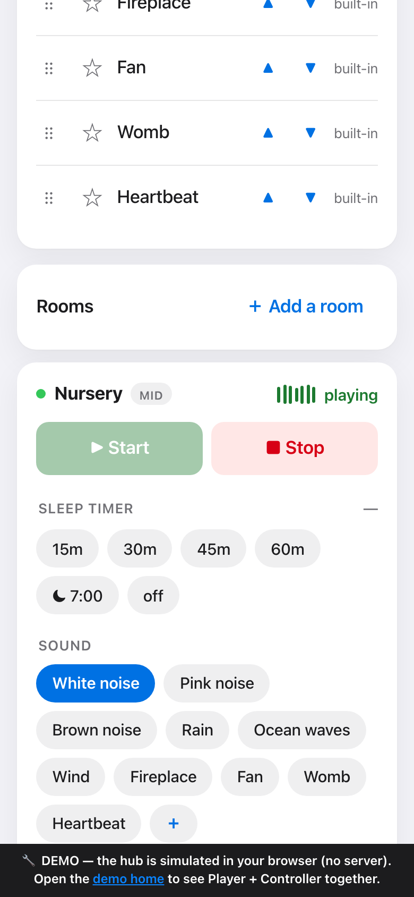
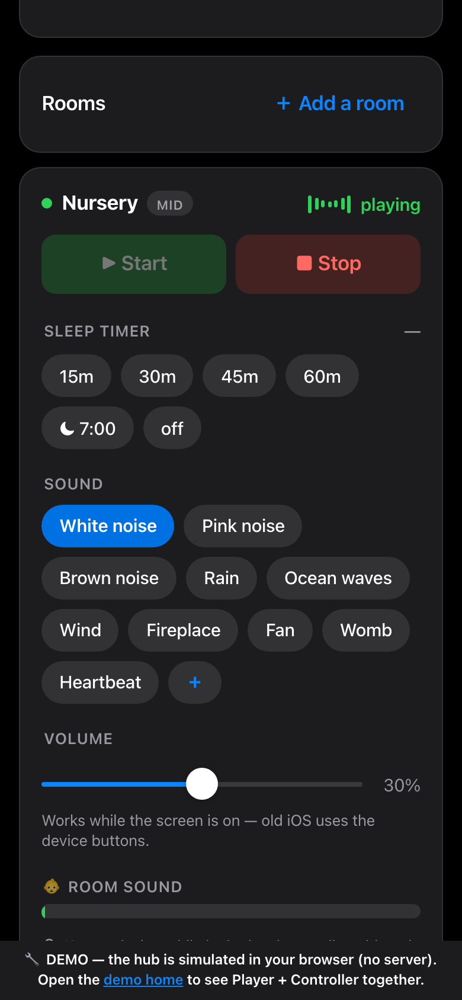
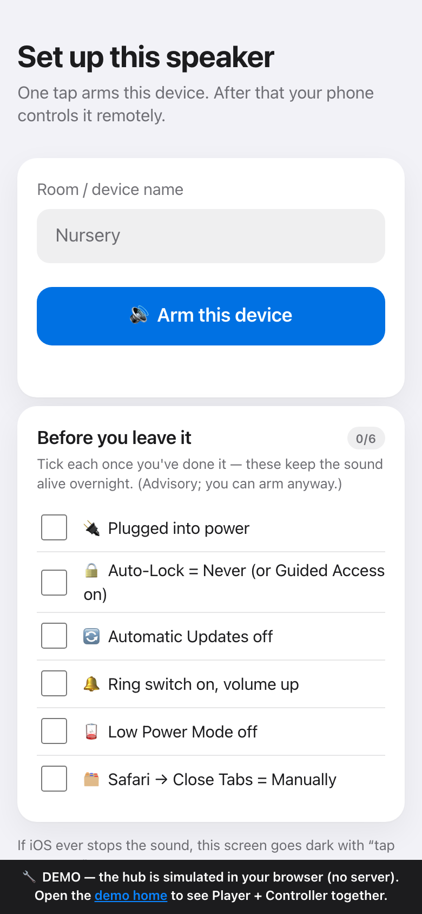
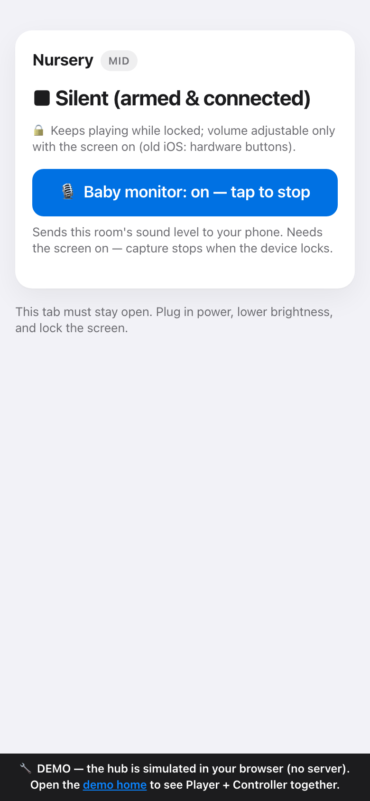

White noise, real ambient recordings (rain, ocean, fire, wind) plus procedural loops, a sleep timer that winds down on its own, and a baby monitor — controlled from the parent's phone, with a loud alarm the moment a room stops sounding when it shouldn't.

Bedtime, then the rooms. One tap starts every room with a 45-min wind-down timer already set; each room picks from 10 loudness-matched sounds.

Every room, at a glance. Start · stop · volume · timer · sound, plus a live “room sound” meter from the baby monitor.

Set up once. A checklist (power, auto-lock, updates off…) turns silent 3am misconfiguration into a visible gap.

Armed & honest. It says exactly what works while locked — and the baby monitor sends the room's sound level back to you.
A leader-elected in-browser hub runs the real protocol over BroadcastChannel, so these unmodified apps genuinely talk to each other with nothing installed. Open full-screen ↗ · or watch the same apps run peer-to-peer over a real WebRTC data channel: the WebRTC prototype ↗. Each app also installs to your home screen as a standalone PWA.